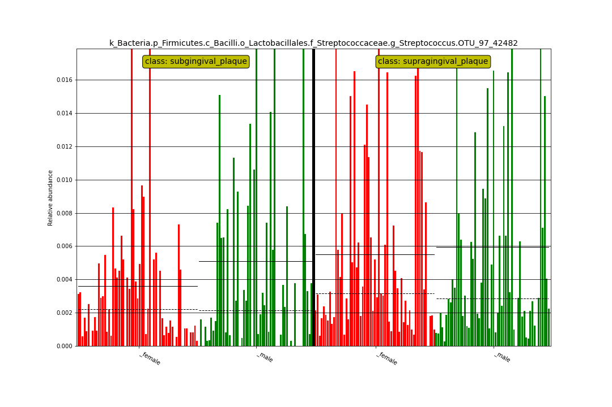

library(MicrobiomeBenchmarkDataLefse)
library(purrr)
library(dplyr)
library(readr)
library(dplyr)
library(tidyr)
library(stringr)Import lefse-conda results
colNames <- c("feature", "log", "class", "lda", "pval")
dirName <- system.file("extdata", package = "MicrobiomeBenchmarkDataLefse")
fNames <- list.files(dirName, full.names = TRUE, pattern = ".res")
dats <- fNames |>
map(~ read_tsv(.x, show_col_types = FALSE, col_names = colNames))
names(dats) <- fNames |>
str_extract("_a.+_w.+_lda\\d_it\\d+_bp\\d+") |>
str_remove("^_")All datasets contain the same number of rows, representing all taxa in the dataset:
Divide the results in two lists: 1. lda3 = anova = 0.01, wilcox = 0.01, lda = 3. 2. lda2 = anova = 0.05, wilcox = 0.05, lda = 2.
Number of features passing all the thresholds
Let’s check the number of significant features passing all the thresholds. Compare these numbers with the logs in the inst/extdata directory. Link: https://github.com/waldronlab/MicrobiomeBenchmarkDataLefse/tree/main/inst/extdata
For lda3:
lda3 |> map_int(~ nrow(drop_na(.x)))
#> a0.01_w0.01_lda3_it1_bp40 a0.01_w0.01_lda3_it10_bp130
#> 21 21
#> a0.01_w0.01_lda3_it2_bp50 a0.01_w0.01_lda3_it3_bp60
#> 21 21
#> a0.01_w0.01_lda3_it4_bp70 a0.01_w0.01_lda3_it5_bp80
#> 21 21
#> a0.01_w0.01_lda3_it6_bp90 a0.01_w0.01_lda3_it7_bp100
#> 21 21
#> a0.01_w0.01_lda3_it8_bp110 a0.01_w0.01_lda3_it9_bp120
#> 21 21For lda2:
lda2 |> map_int(~ nrow(drop_na(.x)))
#> a0.05_w0.05_lda2_it1_bp40 a0.05_w0.05_lda2_it10_bp130
#> 77 77
#> a0.05_w0.05_lda2_it2_bp50 a0.05_w0.05_lda2_it3_bp60
#> 77 77
#> a0.05_w0.05_lda2_it4_bp70 a0.05_w0.05_lda2_it5_bp80
#> 77 77
#> a0.05_w0.05_lda2_it6_bp90 a0.05_w0.05_lda2_it7_bp100
#> 77 77
#> a0.05_w0.05_lda2_it8_bp110 a0.05_w0.05_lda2_it9_bp120
#> 77 77Number of features in lda3 passing the pvalue threshold
Number of features with P-value data:
lda3 |> map_int(~ {
.x |>
filter(!is.na(pval)) |>
filter(!grepl("-", pval)) |>
nrow()
})
#> a0.01_w0.01_lda3_it1_bp40 a0.01_w0.01_lda3_it10_bp130
#> 4 4
#> a0.01_w0.01_lda3_it2_bp50 a0.01_w0.01_lda3_it3_bp60
#> 4 4
#> a0.01_w0.01_lda3_it4_bp70 a0.01_w0.01_lda3_it5_bp80
#> 4 4
#> a0.01_w0.01_lda3_it6_bp90 a0.01_w0.01_lda3_it7_bp100
#> 4 4
#> a0.01_w0.01_lda3_it8_bp110 a0.01_w0.01_lda3_it9_bp120
#> 4 4P-value < 0.01
lda3 |> map(~ {
.x |>
filter(!is.na(pval)) |>
filter(!grepl("-", pval)) |>
mutate(pval = as.double(pval)) |>
mutate(pass = ifelse(pval < 0.01, "yes", "no")) |>
count(pass)
}) |>
bind_rows(.id = "res")
#> # A tibble: 10 × 3
#> res pass n
#> <chr> <chr> <int>
#> 1 a0.01_w0.01_lda3_it1_bp40 yes 4
#> 2 a0.01_w0.01_lda3_it10_bp130 yes 4
#> 3 a0.01_w0.01_lda3_it2_bp50 yes 4
#> 4 a0.01_w0.01_lda3_it3_bp60 yes 4
#> 5 a0.01_w0.01_lda3_it4_bp70 yes 4
#> 6 a0.01_w0.01_lda3_it5_bp80 yes 4
#> 7 a0.01_w0.01_lda3_it6_bp90 yes 4
#> 8 a0.01_w0.01_lda3_it7_bp100 yes 4
#> 9 a0.01_w0.01_lda3_it8_bp110 yes 4
#> 10 a0.01_w0.01_lda3_it9_bp120 yes 4Number of features in lda2 passing the pvalue threshold
lda2 |> map_int(~ {
.x |>
filter(!is.na(pval)) |>
filter(!grepl("-", pval)) |>
nrow()
})
#> a0.05_w0.05_lda2_it1_bp40 a0.05_w0.05_lda2_it10_bp130
#> 38 38
#> a0.05_w0.05_lda2_it2_bp50 a0.05_w0.05_lda2_it3_bp60
#> 38 38
#> a0.05_w0.05_lda2_it4_bp70 a0.05_w0.05_lda2_it5_bp80
#> 38 38
#> a0.05_w0.05_lda2_it6_bp90 a0.05_w0.05_lda2_it7_bp100
#> 38 38
#> a0.05_w0.05_lda2_it8_bp110 a0.05_w0.05_lda2_it9_bp120
#> 38 38P-value < 0.01
lda2 |> map(~ {
.x |>
filter(!is.na(pval)) |>
filter(!grepl("-", pval)) |>
mutate(pval = as.double(pval)) |>
mutate(pass = ifelse(pval < 0.05, "yes", "no")) |>
count(pass)
}) |>
bind_rows(.id = "res")
#> # A tibble: 10 × 3
#> res pass n
#> <chr> <chr> <int>
#> 1 a0.05_w0.05_lda2_it1_bp40 yes 38
#> 2 a0.05_w0.05_lda2_it10_bp130 yes 38
#> 3 a0.05_w0.05_lda2_it2_bp50 yes 38
#> 4 a0.05_w0.05_lda2_it3_bp60 yes 38
#> 5 a0.05_w0.05_lda2_it4_bp70 yes 38
#> 6 a0.05_w0.05_lda2_it5_bp80 yes 38
#> 7 a0.05_w0.05_lda2_it6_bp90 yes 38
#> 8 a0.05_w0.05_lda2_it7_bp100 yes 38
#> 9 a0.05_w0.05_lda2_it8_bp110 yes 38
#> 10 a0.05_w0.05_lda2_it9_bp120 yes 38Plot examples

Histogram (OTU)

sessioninfo::session_info()
#> ─ Session info ───────────────────────────────────────────────────────────────
#> setting value
#> version R version 4.4.1 (2024-06-14)
#> os Ubuntu 22.04.4 LTS
#> system x86_64, linux-gnu
#> ui X11
#> language en
#> collate en_US.UTF-8
#> ctype en_US.UTF-8
#> tz Etc/UTC
#> date 2024-09-05
#> pandoc 3.2 @ /usr/bin/ (via rmarkdown)
#>
#> ─ Packages ───────────────────────────────────────────────────────────────────
#> package * version date (UTC) lib source
#> bit 4.0.5 2022-11-15 [1] RSPM (R 4.4.0)
#> bit64 4.0.5 2020-08-30 [1] RSPM (R 4.4.0)
#> bslib 0.8.0 2024-07-29 [1] RSPM (R 4.4.0)
#> cachem 1.1.0 2024-05-16 [1] RSPM (R 4.4.0)
#> cli 3.6.3 2024-06-21 [1] RSPM (R 4.4.0)
#> crayon 1.5.3 2024-06-20 [1] RSPM (R 4.4.0)
#> desc 1.4.3 2023-12-10 [1] RSPM (R 4.4.0)
#> digest 0.6.37 2024-08-19 [1] RSPM (R 4.4.0)
#> dplyr * 1.1.4 2023-11-17 [1] RSPM (R 4.4.0)
#> evaluate 0.24.0 2024-06-10 [1] RSPM (R 4.4.0)
#> fansi 1.0.6 2023-12-08 [1] RSPM (R 4.4.0)
#> fastmap 1.2.0 2024-05-15 [1] RSPM (R 4.4.0)
#> fs 1.6.4 2024-04-25 [1] RSPM (R 4.4.0)
#> generics 0.1.3 2022-07-05 [1] RSPM (R 4.4.0)
#> glue 1.7.0 2024-01-09 [1] RSPM (R 4.4.0)
#> hms 1.1.3 2023-03-21 [1] RSPM (R 4.4.0)
#> htmltools 0.5.8.1 2024-04-04 [1] RSPM (R 4.4.0)
#> htmlwidgets 1.6.4 2023-12-06 [1] RSPM (R 4.4.0)
#> jquerylib 0.1.4 2021-04-26 [1] RSPM (R 4.4.0)
#> jsonlite 1.8.8 2023-12-04 [1] RSPM (R 4.4.0)
#> knitr 1.48 2024-07-07 [1] RSPM (R 4.4.0)
#> lifecycle 1.0.4 2023-11-07 [1] RSPM (R 4.4.0)
#> magrittr 2.0.3 2022-03-30 [1] RSPM (R 4.4.0)
#> MicrobiomeBenchmarkDataLefse * 0.0.0.9000 2024-09-05 [1] local
#> pillar 1.9.0 2023-03-22 [1] RSPM (R 4.4.0)
#> pkgconfig 2.0.3 2019-09-22 [1] RSPM (R 4.4.0)
#> pkgdown 2.1.0 2024-07-06 [1] RSPM (R 4.4.0)
#> purrr * 1.0.2 2023-08-10 [1] RSPM (R 4.4.0)
#> R6 2.5.1 2021-08-19 [1] RSPM (R 4.4.0)
#> ragg 1.3.2 2024-05-15 [1] RSPM (R 4.4.0)
#> readr * 2.1.5 2024-01-10 [1] RSPM (R 4.4.0)
#> rlang 1.1.4 2024-06-04 [1] RSPM (R 4.4.0)
#> rmarkdown 2.28 2024-08-17 [1] RSPM (R 4.4.0)
#> sass 0.4.9 2024-03-15 [1] RSPM (R 4.4.0)
#> sessioninfo 1.2.2 2021-12-06 [1] RSPM (R 4.4.0)
#> stringi 1.8.4 2024-05-06 [1] RSPM (R 4.4.0)
#> stringr * 1.5.1 2023-11-14 [1] RSPM (R 4.4.0)
#> systemfonts 1.1.0 2024-05-15 [1] RSPM (R 4.4.0)
#> textshaping 0.4.0 2024-05-24 [1] RSPM (R 4.4.0)
#> tibble 3.2.1 2023-03-20 [1] RSPM (R 4.4.0)
#> tidyr * 1.3.1 2024-01-24 [1] RSPM (R 4.4.0)
#> tidyselect 1.2.1 2024-03-11 [1] RSPM (R 4.4.0)
#> tzdb 0.4.0 2023-05-12 [1] RSPM (R 4.4.0)
#> utf8 1.2.4 2023-10-22 [1] RSPM (R 4.4.0)
#> vctrs 0.6.5 2023-12-01 [1] RSPM (R 4.4.0)
#> vroom 1.6.5 2023-12-05 [1] RSPM (R 4.4.0)
#> xfun 0.47 2024-08-17 [1] RSPM (R 4.4.0)
#> yaml 2.3.10 2024-07-26 [1] RSPM (R 4.4.0)
#>
#> [1] /usr/local/lib/R/site-library
#> [2] /usr/local/lib/R/library
#>
#> ──────────────────────────────────────────────────────────────────────────────